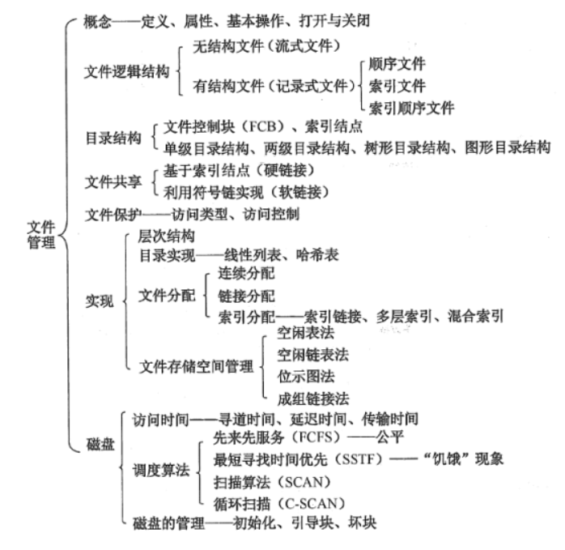
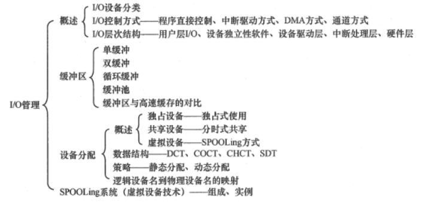
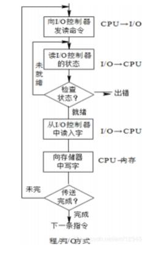
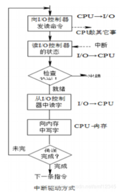
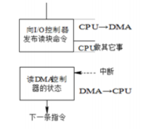

操作系统面经4：文件管理和输入输出管理
1 文件管理

1.1 文件的基本操作？
文件属于抽象数据类型。为了恰当地定义文件，就需要考虑有关文件的操作。操作系统提供系统调用，它对文件进行创建、写、读、定位和截断。
-
创建文件：创建文件有两个必要步骤，一是在文件系统中为文件找到空间；二是在目录中为新文件创建条目，该条目记录文件名称、在文件系统中的位置及其他可能信息。
-
写文件：为了写文件，执行一个系统调用，指明文件名称和要写入文件的内容。对于给定文件名称，系统搜索目录以查找文件位置。系统必须为该文件维护一个写位置的指针。每当发生写操作，便更新写指针。
-
读文件：为了读文件，执行一个系统调用，指明文件名称和要读入文件块的内存位置。同样，需要搜索目录以找到相关目录项，系统维护一个读位置的指针。每当发生读操作时，更新读指针。一个进程通常只对一个文件读或写，所以当前操作位置可作为每个进程当前文件位置指针。
由于读和写操作都使用同一指针，节省了空间也降低了系统复杂度。
-
文件重定位（文件寻址）：按某条件搜索目录，将当前文件位置设为给定值，并且不会读、写文件。
-
删除文件：先从目录中找到要删除文件的目录项，使之成为空项，然后回收该文件所占用的存储空间。
-
截断文件：允许文件所有属性不变，并删除文件内容，即将其长度设为0并释放其空间。这6个基本操作可以组合执行其他文件操作。例如，一个文件的复制，可以创建新文件、 从旧文件读出并写入到新文件。
1.2 磁盘调度算法有哪些？
1.2.1 先来先服务算法
先来先服务算法（FCFS）First Come First Service这是一种比较简单的磁盘调度算法。它根据进程请求访问磁盘的先后次序进行调度。
此算法的优点是公平、简单，且每个进程的请求都能依次得到处理，不会出现某一进程的请求长期得不到满足的情况。此算法由于未对寻道进行优化，在对磁盘的访问请求比较多的情况下，此算法将降低设备服务的吞吐量，致使平均寻道时间可能较长，但各进程得到服务的响应时间的变化幅度较小。
1.2.2 最短寻道时间优先算法
最短寻道时间优先算法（SSTF） Shortest Seek Time First选择这样的进程，其要求访问的磁道与当前磁头所在的磁道距离最近，以使每次的寻道时间最短，该算法可以得到比较好的吞吐量，但却不能保证平均寻道时间最短。
其缺点是对用户的服务请求的响应机会不是均等的，因而导致响应时间的变化幅度很大。在服务请求很多的情况下，对内外边缘磁道的请求将会无限期的被延迟，有些请求的响应时间将不可预期。
1.2.3 扫描算法
扫描算法（SCAN）电梯调度算法不仅考虑到欲访问的磁道与当前磁道的距离，更优先考虑的是磁头的当前移动方向。
例如，当磁头正在自里向外移动时，扫描算法所选择的下一个访问对象应是其欲访问的磁道既在当前磁道之外，又是距离最近的。这样自里向外地访问，直到再无更外的磁道需要访问才将磁臂换向，自外向里移动。这时，同样也是每次选择这样的进程来调度，即其要访问的磁道，在当前磁道之内，从而避免了饥饿现象的出现。由于这种算法中磁头移动的规律颇似电梯的运行，故又称为电梯调度算法。
此算法基本上克服了最短寻道时间优先算法的服务集中于中间磁道和响应时间变化比较大的缺点，而具有最短寻道时间优先算法的优点即吞吐量较大，平均响应时间较小，但由于是摆动式的扫描方法，两侧磁道被访问的频率仍低于中间磁道。
1.2.4 循环扫描算法
循环扫描算法（CSCAN）是对扫描算法的改进。如果对磁道的访问请求是均匀分布的，当磁头到达磁盘的一端，并反向运动时落在磁头之后的访问请求相对较少。
这是由于这些磁道刚被处理，而磁盘另一端的请求密度相当高，且这些访问请求等待的时间较长，为了解决这种情况，循环扫描算法规定磁头单向移动。例如，只自里向外移动，当磁头移到最外的被访问磁道时，磁头立即返回到最里的欲访磁道，即将最小磁道号紧接着最大磁道号构成循环，进行扫描。
2 输入输出管理

2.1 I/O控制方式有哪些？
2.1.1 程序查询方式
早期的计算机系统中， 没有中断系统，所以CPU和I/O设备进行通信，传输数据时CPU速度远快于I/O设备，于是CPU需要不断测试I/O设备，看其是否完成了传输。

2.1.2 程序中断方式
当某进程要启动某个 I/O 设备工作时，便由 CPU 向相应的设备控制器发出一条 I/O 命令，然后立即返回继续执行原来的任务。仅当输完一个数据时，才需 CPU 花费极短的时间去做些中断处理。

2.1.3 DMA方式
DMA方式（直接存储器访问）通过在I/O设备和内存之间开启一个可以直接传输数据的通路，采用DMA控制器来控制一个数据块的传输，CPU只需在一个数据块传输开始阶段设置好传输所需的控制信息，并在传输结束阶段做进一步处理。

2.1.4 I/O通道控制方式
虽然DMA方式比起中断方式来已经显著地减少了CPU的干预，即已由以字（节）为单位的干预减少到以数据块为单位的干预。但CPU每发出一条I/O指令，也只能去读/写一个连续的数据块。而当我们需要一次去读多个数据块且将它们分别传送到不同的内存区域，或者相反时，则需由CPU分别发出多条I/O指令及进行多次中断处理才能完成。
- 通道控制方式与
DMA控制方式类似，也是一种以内存为中心，实现设备与内存直接交换数据的控制方式。 - 与
DMA控制方式相比，通道方式所需要的CPU干预更少，而且可以做到一个通道控制多台设备，从而进一步减轻了CPU负担。 - 通道本质上是一个简单的处理器，专门负责输入、输出控制，具有执行I/O指令的能力，并通过执行通道I/O程序来控制I/O操作。
- 通道的指令系统比较简单，一般只有数据传送指令、设备控制指令等。
2.2 Spooling技术？
虚拟性是OS的四大特性之一。如果说可以通过多道程序技术将一台物理CPU虚拟为多台逻辑CPU，从而允许多个用户共享一台主机，那么，通过SPOOling技术便可将一台物理I/O设备虚拟为多台逻辑I/O设备，同样允许多个用户共享一台物理I/O设备。
SPOOLing技术是对脱机输入、输出系统的模拟。相应地，SPOOLing系统必须建立在具有多道程序功能的操作系统上，而且还应有高速随机外存的支持，这通常是采用磁盘存储技术。
SPOOLing系统主要有以下三部分：
- 输入井和输出井：这是在磁盘上开辟的两个大存储空间。输入井是模拟脱机输入时的磁盘设备，用于暂存I/Q设备输入的数据；输出井是模拟脱机输出时的磁盘，用于暂存用户程序的输出数据。
- 输入缓冲区和输出缓冲区：为了缓和和CPU和磁盘之间速度不匹配的矛盾，在内存中要开辟两个缓冲区；输入缓冲区和输出缓冲区。输入缓冲区用于暂存由输入设备送来的数据，以后再传送到输入井。输出缓冲区用与暂存从输出井送来的数据，以后在传送给输出设备。
- 输入进程**
SPi和输入进程SP0**：这里利用两个进程来模拟脱机I/O时的外围控制机。其中，进程SPi模拟脱机输入时的外围控制机，将用户要求的数据从输入机通过输入缓冲区再送到输入井，当CPU需要输入数据时，直接从输入井读入内存；进程SP0模拟脱机输出时的外围控制机，把用户要求输出的数据从先内存送到输出井，待输出设备空闲时，在将输出井中的数据经过输出缓冲区送到输出设备上。
SPOOLing技术的特点：
- 提高了I/O速度：从对低速I/O设备进行的I/O操作变为对输入井或输出井的操作，如同脱机操作一样，提高了I/O速度，缓和了CPU与低速I/O设备速度不匹配的矛盾。
- 将独占设备改造为共享设备：因为在
SPOOLing系统的系统中，实际上并没为任何进程分配设备，而知识在输入井或输出井中为进程分配一个存储区和建立一张I/O请求表。这样，便把独占设备改造为共享设备。 - 实现了虚拟设备功能：多个进程同时使用一独享设备，而对每一进程而言，都认为自己独占这一设备，从而实现了设备的虚拟分配。不过，该设备是逻辑上的设备。
 微信
微信 支付宝
支付宝